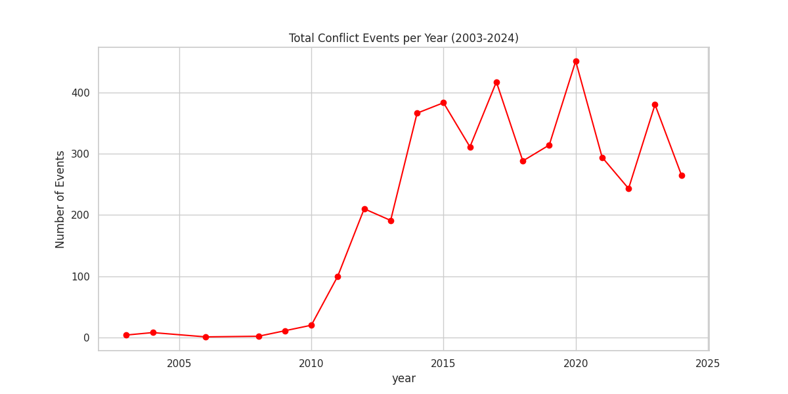
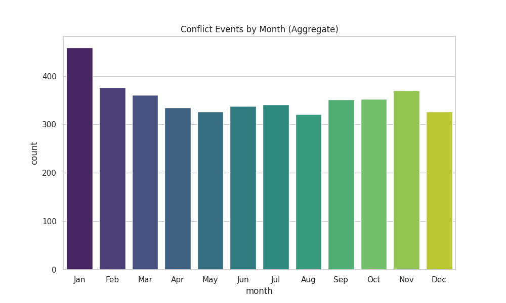
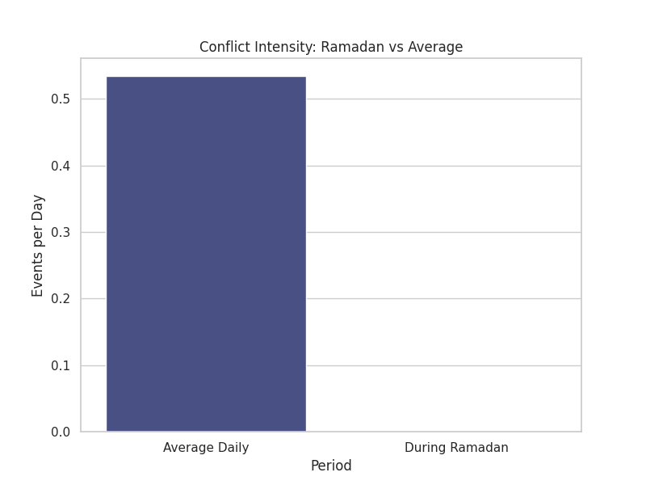
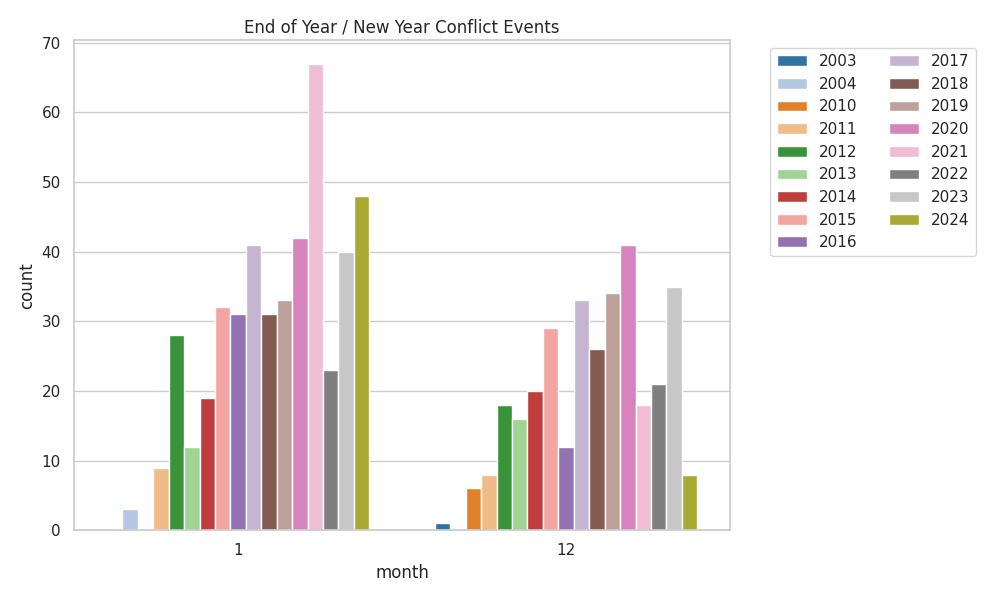

A short dashboard for exploring school locations and school-age population in Borno, Adamawa and Yobe.
Open BAY school heatmap Open Conflict Proximity Map Open Schools at Risk (5km)
The conflict events show a significant escalation after 2009, peaking around 2014-2015, with sustained high levels of activity in the following decade.

Aggregated data shows fluctuations across months. Certain months show higher activity which may correlate with dry/rainy seasons affecting movement and logistics.

Analysis compares the average daily conflict rate against the rate observed during the holy month of Ramadan. Shifts in intensity during this period can offer predictive markers.

Conflict patterns during December and January across the years help identify if the holiday season acts as a catalyst or a deterrent for conflict events.
